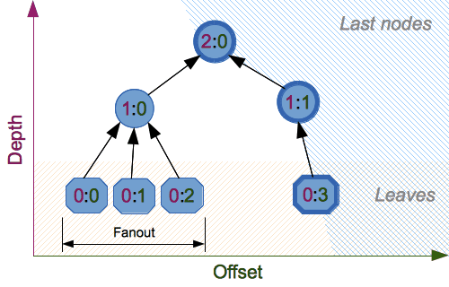

hashlib --- セキュアハッシュとメッセージダイジェスト¶
ソースコード: Lib/hashlib.py
This module implements a common interface to many different hash algorithms. Included are the FIPS secure hash algorithms SHA224, SHA256, SHA384, SHA512, (defined in the FIPS 180-4 standard), the SHA-3 series (defined in the FIPS 202 standard) as well as the legacy algorithms SHA1 (formerly part of FIPS) and the MD5 algorithm (defined in internet RFC 1321).
注釈
adler32 や crc32 ハッシュ関数は zlib モジュールで提供されています。
ハッシュアルゴリズム¶
各 hash の名前が付いたコンストラクタがあります。いずれも同一で簡単なインターフェイスのあるハッシュオブジェクトを返します。例えば、SHA-256 ハッシュオブジェクトを作るには sha256() を使います。このオブジェクトには update メソッドを用いて bytes-like オブジェクト (通常 bytes) を渡すことができます。digest() や hexdigest() メソッドを用いて、それまでに渡したデータを連結したものの digest をいつでも要求することができます。
To allow multithreading, the Python GIL is released while computing a
hash supplied more than 2047 bytes of data at once in its constructor or
.update method.
Constructors for hash algorithms that are always present in this module are
sha1(), sha224(), sha256(), sha384(), sha512(),
sha3_224(), sha3_256(), sha3_384(), sha3_512(),
shake_128(), shake_256(), blake2b(), and blake2s().
md5() is normally available as well, though it may be missing or blocked
if you are using a rare "FIPS compliant" build of Python.
These correspond to algorithms_guaranteed.
Additional algorithms may also be available if your Python distribution's
hashlib was linked against a build of OpenSSL that provides others.
Others are not guaranteed available on all installations and will only be
accessible by name via new(). See algorithms_available.
警告
Some algorithms have known hash collision weaknesses (including MD5 and SHA1). Refer to Attacks on cryptographic hash algorithms and the hashlib-seealso section at the end of this document.
Added in version 3.6: SHA3 (Keccak) and SHAKE constructors sha3_224(), sha3_256(),
sha3_384(), sha3_512(), shake_128(), shake_256()
were added.
blake2b() and blake2s() were added.
バージョン 3.9 で変更: All hashlib constructors take a keyword-only argument usedforsecurity
with default value True. A false value allows the use of insecure and
blocked hashing algorithms in restricted environments. False indicates
that the hashing algorithm is not used in a security context, e.g. as a
non-cryptographic one-way compression function.
バージョン 3.9 で変更: Hashlib now uses SHA3 and SHAKE from OpenSSL if it provides it.
バージョン 3.12 で変更: For any of the MD5, SHA1, SHA2, or SHA3 algorithms that the linked OpenSSL does not provide we fall back to a verified implementation from the HACL* project.
使用法¶
``b"Nobody inspects the spammish repetition"``というバイト文字列のダイジェストを取得するには次のようにします:
>>> import hashlib
>>> m = hashlib.sha256()
>>> m.update(b"Nobody inspects")
>>> m.update(b" the spammish repetition")
>>> m.digest()
b'\x03\x1e\xdd}Ae\x15\x93\xc5\xfe\\\x00o\xa5u+7\xfd\xdf\xf7\xbcN\x84:\xa6\xaf\x0c\x95\x0fK\x94\x06'
>>> m.hexdigest()
'031edd7d41651593c5fe5c006fa5752b37fddff7bc4e843aa6af0c950f4b9406'
もっと簡潔に書くと、このようになります:
>>> hashlib.sha256(b"Nobody inspects the spammish repetition").hexdigest()
'031edd7d41651593c5fe5c006fa5752b37fddff7bc4e843aa6af0c950f4b9406'
コンストラクタ¶
- hashlib.new(name, [data, ]*, usedforsecurity=True)¶
一般的なコンストラクタで、第一引数にアルゴリズム名を文字列 name で受け取ります。他にも、前述のハッシュアルゴリズムだけでなく OpenSSL ライブラリーが提供するような他のアルゴリズムにアクセスすることができます。
Using new() with an algorithm name:
>>> h = hashlib.new('sha256')
>>> h.update(b"Nobody inspects the spammish repetition")
>>> h.hexdigest()
'031edd7d41651593c5fe5c006fa5752b37fddff7bc4e843aa6af0c950f4b9406'
- hashlib.md5([data, ]*, usedforsecurity=True)¶
- hashlib.sha1([data, ]*, usedforsecurity=True)¶
- hashlib.sha224([data, ]*, usedforsecurity=True)¶
- hashlib.sha256([data, ]*, usedforsecurity=True)¶
- hashlib.sha384([data, ]*, usedforsecurity=True)¶
- hashlib.sha512([data, ]*, usedforsecurity=True)¶
- hashlib.sha3_224([data, ]*, usedforsecurity=True)¶
- hashlib.sha3_256([data, ]*, usedforsecurity=True)¶
- hashlib.sha3_384([data, ]*, usedforsecurity=True)¶
- hashlib.sha3_512([data, ]*, usedforsecurity=True)¶
Named constructors such as these are faster than passing an algorithm name to
new().
属性¶
Hashlib provides the following constant module attributes:
- hashlib.algorithms_guaranteed¶
このモジュールによってすべてのプラットフォームでサポートされていることが保証されるハッシュアルゴリズムの名前を含む集合です。一部のアップストリームのベンダーが提供する奇妙な "FIPS準拠の" Pythonビルドではmd5のサポートを除外していますが、その場合であっても 'md5' がリストに含まれることに注意してください。
Added in version 3.2.
- hashlib.algorithms_available¶
実行中の Python インタープリタで利用可能なハッシュアルゴリズム名の set です。これらの名前は
new()に渡すことができます。algorithms_guaranteedは常にサブセットです。この set の中に同じアルゴリズムが違う名前で複数回現れることがあります (OpenSSL 由来)。Added in version 3.2.
Hash Objects¶
コンストラクタが返すハッシュオブジェクトには、次のような定数属性が用意されています:
- hash.digest_size¶
生成されたハッシュのバイト数。
- hash.block_size¶
内部で使われるハッシュアルゴリズムのブロックのバイト数。
ハッシュオブジェクトには次のような属性があります:
- hash.name¶
このハッシュの正規名です。常に小文字で、
new()の引数として渡してこのタイプの別のハッシュを生成することができます。バージョン 3.4 で変更: name 属性は CPython には最初からありましたが、Python 3.4 までは正式に明記されていませんでした。そのため、プラットフォームによっては存在しないかもしれません。
ハッシュオブジェクトには次のようなメソッドがあります:
- hash.update(data)¶
hash オブジェクトを bytes-like object で更新します。このメソッドの呼出しの繰り返しは、それらの引数を全て結合した引数で単一の呼び出しをした際と同じになります。すなわち
m.update(a); m.update(b)はm.update(a + b)と等価です。
- hash.digest()¶
これまで
update()メソッドに渡されたデータのダイジェスト値を返します。これはdigest_sizeと同じ長さの、0 から 255 の範囲全てを含み得るバイトの列です。
- hash.copy()¶
ハッシュオブジェクトのコピー ("クローン") を返します。これは、最初の部分文字列が共通なデータのダイジェストを効率的に計算するために使用します。
SHAKE 可変長ダイジェスト¶
- hashlib.shake_128([data, ]*, usedforsecurity=True)¶
- hashlib.shake_256([data, ]*, usedforsecurity=True)¶
The shake_128() and shake_256() algorithms provide variable
length digests with length_in_bits//2 up to 128 or 256 bits of security.
As such, their digest methods require a length. Maximum length is not limited
by the SHAKE algorithm.
- shake.digest(length)¶
これまで
update()メソッドに渡されたデータのダイジェスト値を返します。これは length と同じ長さの、0 から 255 の範囲全てを含み得るバイトの列です。
使用例:
>>> h = hashlib.shake_256(b'Nobody inspects the spammish repetition')
>>> h.hexdigest(20)
'44709d6fcb83d92a76dcb0b668c98e1b1d3dafe7'
ファイルのハッシュ化¶
The hashlib module provides a helper function for efficient hashing of a file or file-like object.
- hashlib.file_digest(fileobj, digest, /)¶
Return a digest object that has been updated with contents of file object.
fileobj must be a file-like object opened for reading in binary mode. It accepts file objects from builtin
open(),BytesIOinstances, SocketIO objects fromsocket.socket.makefile(), and similar. fileobj must be opened in blocking mode, otherwise aBlockingIOErrormay be raised.The function may bypass Python's I/O and use the file descriptor from
fileno()directly. fileobj must be assumed to be in an unknown state after this function returns or raises. It is up to the caller to close fileobj.digest must either be a hash algorithm name as a str, a hash constructor, or a callable that returns a hash object.
例:
>>> import io, hashlib, hmac >>> with open("library/hashlib.rst", "rb") as f: ... digest = hashlib.file_digest(f, "sha256") ... >>> digest.hexdigest() '...'
>>> buf = io.BytesIO(b"somedata") >>> mac1 = hmac.HMAC(b"key", digestmod=hashlib.sha512) >>> digest = hashlib.file_digest(buf, lambda: mac1)
>>> digest is mac1 True >>> mac2 = hmac.HMAC(b"key", b"somedata", digestmod=hashlib.sha512) >>> mac1.digest() == mac2.digest() True
Added in version 3.11.
バージョン 3.14 で変更: Now raises a
BlockingIOErrorif the file is opened in non-blocking mode. Previously, spurious null bytes were added to the digest.
鍵導出¶
鍵の導出 (derivation) と引き伸ばし (stretching) のアルゴリズムはセキュアなパスワードのハッシュ化のために設計されました。 sha1(password) のような甘いアルゴリズムは、ブルートフォース攻撃に抵抗できません。良いパスワードハッシュ化は調節可能で、遅くて、 salt を含まなければなりません。
- hashlib.pbkdf2_hmac(hash_name, password, salt, iterations, dklen=None)¶
この関数は PKCS#5 のパスワードに基づいた鍵導出関数 2 を提供しています。疑似乱数関数として HMAC を使用しています。
文字列 hash_name は、HMAC のハッシュダイジェストアルゴリズムの望ましい名前で、例えば 'sha1' や 'sha256' です。 password と salt はバイト列のバッファとして解釈されます。アプリケーションとライブラリは、 password を適切な長さ (例えば 1024) に制限すべきです。 salt は
os.urandom()のような適切なソースからの、およそ 16 バイトかそれ以上のバイト列にするべきです。The number of iterations should be chosen based on the hash algorithm and computing power. As of 2022, hundreds of thousands of iterations of SHA-256 are suggested. For rationale as to why and how to choose what is best for your application, read Appendix A.2.2 of NIST-SP-800-132. The answers on the stackexchange pbkdf2 iterations question explain in detail.
dklen は、導出されたバイト列の鍵の長さです。 dklen が
Noneの場合、ハッシュアルゴリズム hash_name のダイジェストサイズが使われます。例えば SHA-512 では 64 です。>>> from hashlib import pbkdf2_hmac >>> our_app_iters = 500_000 # Application specific, read above. >>> dk = pbkdf2_hmac('sha256', b'password', b'bad salt' * 2, our_app_iters) >>> dk.hex() '15530bba69924174860db778f2c6f8104d3aaf9d26241840c8c4a641c8d000a9'
Function only available when Python is compiled with OpenSSL.
Added in version 3.4.
バージョン 3.12 で変更: Function now only available when Python is built with OpenSSL. The slow pure Python implementation has been removed.
- hashlib.scrypt(password, *, salt, n, r, p, maxmem=0, dklen=64)¶
この関数は、 RFC 7914 で定義されるscrypt のパスワードに基づいた鍵導出関数を提供します。
password と salt は bytes-like object でなければなりません。アプリケーションとライブラリは、 password を適切な長さ (例えば 1024) に制限すべきです。 salt は
os.urandom()のような適切なソースからの、およそ 16 バイトかそれ以上のバイト列にするべきです。n is the CPU/Memory cost factor, r the block size, p parallelization factor and maxmem limits memory (OpenSSL 1.1.0 defaults to 32 MiB). dklen is the length of the derived key in bytes.
Added in version 3.6.
BLAKE2¶
BLAKE2 is a cryptographic hash function defined in RFC 7693 that comes in two flavors:
BLAKE2b, optimized for 64-bit platforms and produces digests of any size between 1 and 64 bytes,
BLAKE2s, optimized for 8- to 32-bit platforms and produces digests of any size between 1 and 32 bytes.
BLAKE2 supports keyed mode (a faster and simpler replacement for HMAC), salted hashing, personalization, and tree hashing.
Hash objects from this module follow the API of standard library's
hashlib objects.
ハッシュオブジェクトの作成¶
新しいハッシュオブジェクトは、コンストラクタ関数を呼び出すことで生成されます:
- hashlib.blake2b(data=b'', *, digest_size=64, key=b'', salt=b'', person=b'', fanout=1, depth=1, leaf_size=0, node_offset=0, node_depth=0, inner_size=0, last_node=False, usedforsecurity=True)¶
- hashlib.blake2s(data=b'', *, digest_size=32, key=b'', salt=b'', person=b'', fanout=1, depth=1, leaf_size=0, node_offset=0, node_depth=0, inner_size=0, last_node=False, usedforsecurity=True)¶
These functions return the corresponding hash objects for calculating BLAKE2b or BLAKE2s. They optionally take these general parameters:
data: initial chunk of data to hash, which must be bytes-like object. It can be passed only as positional argument.
digest_size: 出力するダイジェストのバイト数。
key: key for keyed hashing (up to 64 bytes for BLAKE2b, up to 32 bytes for BLAKE2s).
salt: salt for randomized hashing (up to 16 bytes for BLAKE2b, up to 8 bytes for BLAKE2s).
person: personalization string (up to 16 bytes for BLAKE2b, up to 8 bytes for BLAKE2s).
下の表は一般的なパラメータの上限 (バイト単位) です:
Hash |
digest_size |
len(key) |
len(salt) |
len(person) |
|---|---|---|---|---|
BLAKE2b |
64 |
64 |
16 |
16 |
BLAKE2s |
32 |
32 |
8 |
8 |
注釈
BLAKE2 specification defines constant lengths for salt and personalization
parameters, however, for convenience, this implementation accepts byte
strings of any size up to the specified length. If the length of the
parameter is less than specified, it is padded with zeros, thus, for
example, b'salt' and b'salt\x00' is the same value. (This is not
the case for key.)
これらのサイズは以下に述べるモジュール constants で利用できます。
コンストラクタ関数は以下のツリーハッシングパラメタを受け付けます:
fanout: fanout (0 to 255, 0 if unlimited, 1 in sequential mode).
depth: ツリーの深さの最大値（1から255までの値で、無制限であれば255、シーケンスモードでは1）。
leaf_size: maximal byte length of leaf (0 to
2**32-1, 0 if unlimited or in sequential mode).node_offset: node offset (0 to
2**64-1for BLAKE2b, 0 to2**48-1for BLAKE2s, 0 for the first, leftmost, leaf, or in sequential mode).node_depth: node depth (0 to 255, 0 for leaves, or in sequential mode).
inner_size: inner digest size (0 to 64 for BLAKE2b, 0 to 32 for BLAKE2s, 0 in sequential mode).
last_node: boolean indicating whether the processed node is the last one (
Falsefor sequential mode).

See section 2.10 in BLAKE2 specification for comprehensive review of tree hashing.
定数¶
- blake2b.SALT_SIZE¶
- blake2s.SALT_SIZE¶
ソルト長（コンストラクタが受け付けれる最大長）
- blake2b.PERSON_SIZE¶
- blake2s.PERSON_SIZE¶
Personalization string length (maximum length accepted by constructors).
- blake2b.MAX_KEY_SIZE¶
- blake2s.MAX_KEY_SIZE¶
最大キー長
- blake2b.MAX_DIGEST_SIZE¶
- blake2s.MAX_DIGEST_SIZE¶
ハッシュ関数が出力しうるダイジェストの最大長
使用例¶
簡単なハッシュ化¶
To calculate hash of some data, you should first construct a hash object by
calling the appropriate constructor function (blake2b() or
blake2s()), then update it with the data by calling update() on the
object, and, finally, get the digest out of the object by calling
digest() (or hexdigest() for hex-encoded string).
>>> from hashlib import blake2b
>>> h = blake2b()
>>> h.update(b'Hello world')
>>> h.hexdigest()
'6ff843ba685842aa82031d3f53c48b66326df7639a63d128974c5c14f31a0f33343a8c65551134ed1ae0f2b0dd2bb495dc81039e3eeb0aa1bb0388bbeac29183'
As a shortcut, you can pass the first chunk of data to update directly to the constructor as the positional argument:
>>> from hashlib import blake2b
>>> blake2b(b'Hello world').hexdigest()
'6ff843ba685842aa82031d3f53c48b66326df7639a63d128974c5c14f31a0f33343a8c65551134ed1ae0f2b0dd2bb495dc81039e3eeb0aa1bb0388bbeac29183'
You can call hash.update() as many times as you need to iteratively
update the hash:
>>> from hashlib import blake2b
>>> items = [b'Hello', b' ', b'world']
>>> h = blake2b()
>>> for item in items:
... h.update(item)
...
>>> h.hexdigest()
'6ff843ba685842aa82031d3f53c48b66326df7639a63d128974c5c14f31a0f33343a8c65551134ed1ae0f2b0dd2bb495dc81039e3eeb0aa1bb0388bbeac29183'
Using different digest sizes¶
BLAKE2 はダイジェストの長さを、BLAKE2bでは64バイトまで、BLAKE2sでは32バイトまでのダイジェスト長を指定できます。例えばSHA-1を、出力を同じ長さのままでBLAKE2bで置き換えるには、BLAKE2bに20バイトのダイジェストを生成するように指示できます:
>>> from hashlib import blake2b
>>> h = blake2b(digest_size=20)
>>> h.update(b'Replacing SHA1 with the more secure function')
>>> h.hexdigest()
'd24f26cf8de66472d58d4e1b1774b4c9158b1f4c'
>>> h.digest_size
20
>>> len(h.digest())
20
Hash objects with different digest sizes have completely different outputs (shorter hashes are not prefixes of longer hashes); BLAKE2b and BLAKE2s produce different outputs even if the output length is the same:
>>> from hashlib import blake2b, blake2s
>>> blake2b(digest_size=10).hexdigest()
'6fa1d8fcfd719046d762'
>>> blake2b(digest_size=11).hexdigest()
'eb6ec15daf9546254f0809'
>>> blake2s(digest_size=10).hexdigest()
'1bf21a98c78a1c376ae9'
>>> blake2s(digest_size=11).hexdigest()
'567004bf96e4a25773ebf4'
Keyed hashing¶
Keyed hashing can be used for authentication as a faster and simpler replacement for Hash-based message authentication code (HMAC). BLAKE2 can be securely used in prefix-MAC mode thanks to the indifferentiability property inherited from BLAKE.
This example shows how to get a (hex-encoded) 128-bit authentication code for
message b'message data' with key b'pseudorandom key':
>>> from hashlib import blake2b
>>> h = blake2b(key=b'pseudorandom key', digest_size=16)
>>> h.update(b'message data')
>>> h.hexdigest()
'3d363ff7401e02026f4a4687d4863ced'
As a practical example, a web application can symmetrically sign cookies sent to users and later verify them to make sure they weren't tampered with:
>>> from hashlib import blake2b
>>> from hmac import compare_digest
>>>
>>> SECRET_KEY = b'pseudorandomly generated server secret key'
>>> AUTH_SIZE = 16
>>>
>>> def sign(cookie):
... h = blake2b(digest_size=AUTH_SIZE, key=SECRET_KEY)
... h.update(cookie)
... return h.hexdigest().encode('utf-8')
>>>
>>> def verify(cookie, sig):
... good_sig = sign(cookie)
... return compare_digest(good_sig, sig)
>>>
>>> cookie = b'user-alice'
>>> sig = sign(cookie)
>>> print("{0},{1}".format(cookie.decode('utf-8'), sig))
user-alice,b'43b3c982cf697e0c5ab22172d1ca7421'
>>> verify(cookie, sig)
True
>>> verify(b'user-bob', sig)
False
>>> verify(cookie, b'0102030405060708090a0b0c0d0e0f00')
False
Even though there's a native keyed hashing mode, BLAKE2 can, of course, be used
in HMAC construction with hmac module:
>>> import hmac, hashlib
>>> m = hmac.new(b'secret key', digestmod=hashlib.blake2s)
>>> m.update(b'message')
>>> m.hexdigest()
'e3c8102868d28b5ff85fc35dda07329970d1a01e273c37481326fe0c861c8142'
Randomized hashing¶
By setting salt parameter users can introduce randomization to the hash function. Randomized hashing is useful for protecting against collision attacks on the hash function used in digital signatures.
Randomized hashing is designed for situations where one party, the message preparer, generates all or part of a message to be signed by a second party, the message signer. If the message preparer is able to find cryptographic hash function collisions (i.e., two messages producing the same hash value), then they might prepare meaningful versions of the message that would produce the same hash value and digital signature, but with different results (e.g., transferring $1,000,000 to an account, rather than $10). Cryptographic hash functions have been designed with collision resistance as a major goal, but the current concentration on attacking cryptographic hash functions may result in a given cryptographic hash function providing less collision resistance than expected. Randomized hashing offers the signer additional protection by reducing the likelihood that a preparer can generate two or more messages that ultimately yield the same hash value during the digital signature generation process --- even if it is practical to find collisions for the hash function. However, the use of randomized hashing may reduce the amount of security provided by a digital signature when all portions of the message are prepared by the signer.
(NIST SP-800-106 "Randomized Hashing for Digital Signatures")
In BLAKE2 the salt is processed as a one-time input to the hash function during initialization, rather than as an input to each compression function.
警告
Salted hashing (or just hashing) with BLAKE2 or any other general-purpose cryptographic hash function, such as SHA-256, is not suitable for hashing passwords. See BLAKE2 FAQ for more information.
>>> import os
>>> from hashlib import blake2b
>>> msg = b'some message'
>>> # Calculate the first hash with a random salt.
>>> salt1 = os.urandom(blake2b.SALT_SIZE)
>>> h1 = blake2b(salt=salt1)
>>> h1.update(msg)
>>> # Calculate the second hash with a different random salt.
>>> salt2 = os.urandom(blake2b.SALT_SIZE)
>>> h2 = blake2b(salt=salt2)
>>> h2.update(msg)
>>> # The digests are different.
>>> h1.digest() != h2.digest()
True
Personalization¶
Sometimes it is useful to force hash function to produce different digests for the same input for different purposes. Quoting the authors of the Skein hash function:
We recommend that all application designers seriously consider doing this; we have seen many protocols where a hash that is computed in one part of the protocol can be used in an entirely different part because two hash computations were done on similar or related data, and the attacker can force the application to make the hash inputs the same. Personalizing each hash function used in the protocol summarily stops this type of attack.
(The Skein Hash Function Family, p. 21)
BLAKE2は person 引数にバイト列を渡すことでパーソナライズできます:
>>> from hashlib import blake2b
>>> FILES_HASH_PERSON = b'MyApp Files Hash'
>>> BLOCK_HASH_PERSON = b'MyApp Block Hash'
>>> h = blake2b(digest_size=32, person=FILES_HASH_PERSON)
>>> h.update(b'the same content')
>>> h.hexdigest()
'20d9cd024d4fb086aae819a1432dd2466de12947831b75c5a30cf2676095d3b4'
>>> h = blake2b(digest_size=32, person=BLOCK_HASH_PERSON)
>>> h.update(b'the same content')
>>> h.hexdigest()
'cf68fb5761b9c44e7878bfb2c4c9aea52264a80b75005e65619778de59f383a3'
Personalization together with the keyed mode can also be used to derive different keys from a single one.
>>> from hashlib import blake2s
>>> from base64 import b64decode, b64encode
>>> orig_key = b64decode(b'Rm5EPJai72qcK3RGBpW3vPNfZy5OZothY+kHY6h21KM=')
>>> enc_key = blake2s(key=orig_key, person=b'kEncrypt').digest()
>>> mac_key = blake2s(key=orig_key, person=b'kMAC').digest()
>>> print(b64encode(enc_key).decode('utf-8'))
rbPb15S/Z9t+agffno5wuhB77VbRi6F9Iv2qIxU7WHw=
>>> print(b64encode(mac_key).decode('utf-8'))
G9GtHFE1YluXY1zWPlYk1e/nWfu0WSEb0KRcjhDeP/o=
ツリーモード¶
これが二つの葉ノードからなる最小の木をハッシュする例です:
10
/ \
00 01
次の例では、64バイトの内部桁が使われ、32バイトの最終的なダイジェストを返しています:
>>> from hashlib import blake2b
>>>
>>> FANOUT = 2
>>> DEPTH = 2
>>> LEAF_SIZE = 4096
>>> INNER_SIZE = 64
>>>
>>> buf = bytearray(6000)
>>>
>>> # Left leaf
... h00 = blake2b(buf[0:LEAF_SIZE], fanout=FANOUT, depth=DEPTH,
... leaf_size=LEAF_SIZE, inner_size=INNER_SIZE,
... node_offset=0, node_depth=0, last_node=False)
>>> # Right leaf
... h01 = blake2b(buf[LEAF_SIZE:], fanout=FANOUT, depth=DEPTH,
... leaf_size=LEAF_SIZE, inner_size=INNER_SIZE,
... node_offset=1, node_depth=0, last_node=True)
>>> # Root node
... h10 = blake2b(digest_size=32, fanout=FANOUT, depth=DEPTH,
... leaf_size=LEAF_SIZE, inner_size=INNER_SIZE,
... node_offset=0, node_depth=1, last_node=True)
>>> h10.update(h00.digest())
>>> h10.update(h01.digest())
>>> h10.hexdigest()
'3ad2a9b37c6070e374c7a8c508fe20ca86b6ed54e286e93a0318e95e881db5aa'
クレジット:¶
BLAKE2 は*Jean-Philippe Aumasson*、 Luca Henzen、 Willi Meier そして Raphael C.-W. Phan によって作成された SHA-3 の最終候補である BLAKE を元に、Jean-Philippe Aumasson、 Samuel Neves、 Zooko Wilcox-O'Hearn, そして Christian Winnerlein によって設計されました。
それは、 Daniel J. Bernstein によって設計されたChaCha 暗号由来のアルゴリズムを用いています。
標準ライブラリは pyblake2 モジュールを基礎として実装されています。 このモジュールは Dmitry Chestnykh によって、Samuel Neves が作成した C実装を元に書かれました。 このドキュメントは、pyblake2 からコピーされ、Dmitry Chestnykh によって書かれました。
Christian Heimes によって、一部のCコードがPython向けに書き直されました。
以下の public domain dedicationが、Cのハッシュ関数実装と、拡張コードと、このドキュメントに適用されます:
To the extent possible under law, the author(s) have dedicated all copyright and related and neighboring rights to this software to the public domain worldwide. This software is distributed without any warranty.
You should have received a copy of the CC0 Public Domain Dedication along with this software. If not, see https://creativecommons.org/publicdomain/zero/1.0/.
The following people have helped with development or contributed their changes to the project and the public domain according to the Creative Commons Public Domain Dedication 1.0 Universal:
Alexandr Sokolovskiy
参考
hmacモジュールハッシュを用いてメッセージ認証コードを生成するモジュールです。
base64モジュールバイナリハッシュを非バイナリ環境用にエンコードするもうひとつの方法です。
- https://nvlpubs.nist.gov/nistpubs/fips/nist.fips.180-4.pdf
The FIPS 180-4 publication on Secure Hash Algorithms.
- https://csrc.nist.gov/pubs/fips/202/final
The FIPS 202 publication on the SHA-3 Standard.
- https://www.blake2.net/
BLAKE2 の公式ウェブサイト
- https://en.wikipedia.org/wiki/Cryptographic_hash_function
どのアルゴリズムにどんな既知の問題があって、それが実際に利用する際にどう影響するかについての Wikipedia の記事。
- https://www.ietf.org/rfc/rfc8018.txt
PKCS #5: Password-Based Cryptography Specification Version 2.1
- https://nvlpubs.nist.gov/nistpubs/Legacy/SP/nistspecialpublication800-132.pdf
NIST Recommendation for Password-Based Key Derivation.